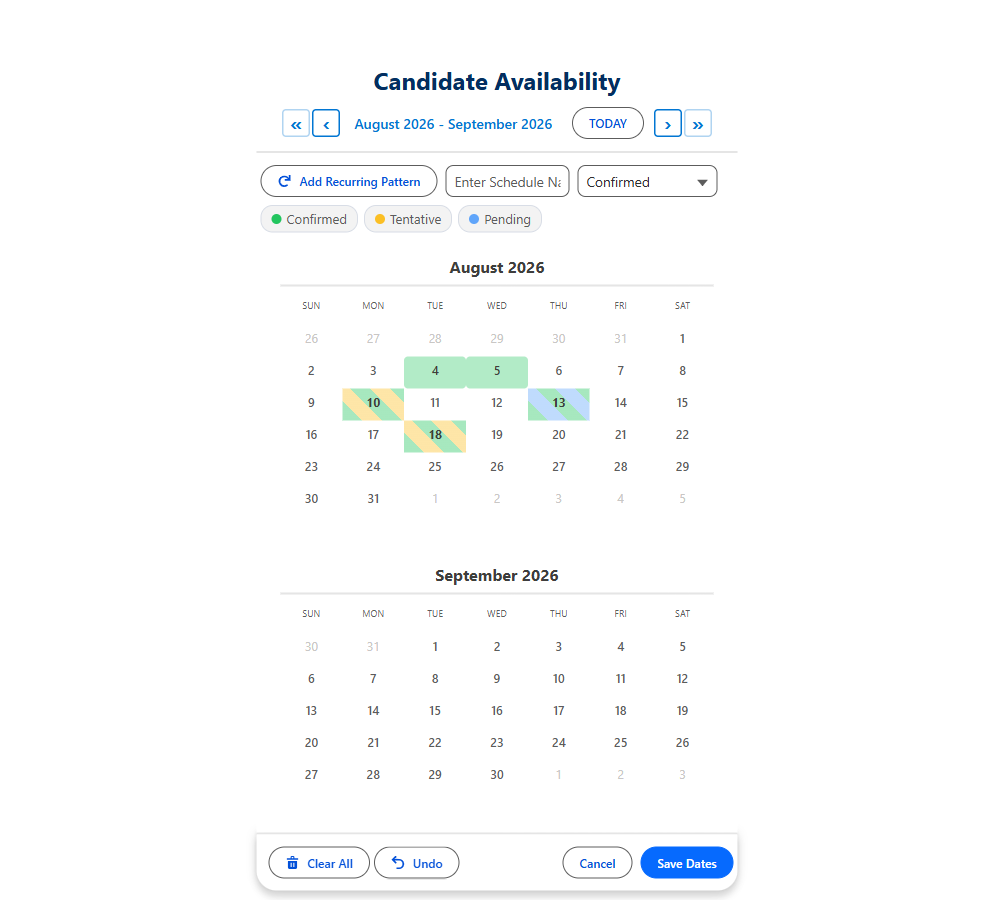

How to Let Users Pick Multiple Dates in a Salesforce Screen Flow
Flow gives you one Date field per screen element. If someone needs to choose nine days, that is a problem. Here are the options, and the tradeoffs of each.
Every admin hits this eventually. A time-off request, an availability form, a training sign-up: the user needs to select several dates that are not necessarily consecutive, and Flow's standard Date component captures exactly one.
The workarounds, and why they hurt
| Approach | How it goes | The cost |
|---|---|---|
| Several Date fields on one screen | Date 1, Date 2, Date 3, Date 4... | Fixed ceiling, ugly, and mostly empty |
| A loop that asks one at a time | "Add another date?" then back to the screen | Painful past about three dates |
| A free-text field | User types the dates as text | Unparseable, unreportable, error-prone |
| Start and end date only | Treat it as one continuous range | Wrong whenever the days are not contiguous |
| A multi-select picklist of dates | Pre-generate date values | Goes stale, needs constant maintenance |
The start-and-end workaround is the most common and the most quietly wrong. "I need the 3rd, 4th, 11th and 18th off" becomes 3rd to 18th, which is sixteen days of implied absence. The data looks clean and is simply incorrect.
The real fix: a screen component that returns a collection
What Flow actually needs is a screen component that lets the user click as many dates as they like and hands back a collection. Once you have that, the rest of the flow is ordinary: loop the collection, create a record per date, done.
MultiDatePick returns several outputs depending on what you are capturing:
selectedDates: a Text collection of ISO dates, ready to loopselectedDateRangesJson: consolidated ranges, when consecutive days should collapse into one recordselectedDatesWithTimesJson: per-date start and end timesbookingSuccessCountandbookingConflictDates: what saved, and what clashed
Turning JSON back into records
Two of those outputs are JSON strings, because Flow has no native type for "a list of objects with several fields each." Rather than making you parse text in a formula, there is an invocable Apex action, MultiDatePickParser, that takes the JSON and returns a proper collection with fromDate, toDate, startTime, endTime, resourceId, and resourceName. You loop that collection like any other.

One gotcha that costs people an hour
$GlobalConstant.True or $GlobalConstant.False rather than leaving them empty.
Decide the record shape before you build
The same nine selected dates can legitimately become nine records, or four records if consecutive days collapse into ranges, or one parent record with sub-blocks. None is more correct in the abstract; it depends on what you need to report on. Decide it before you build the flow, because changing it afterwards means migrating data as well as editing the flow.